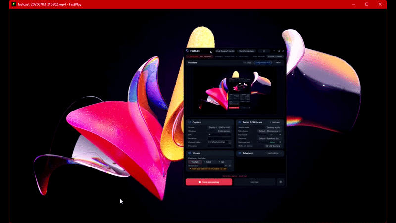

Instant first frame
Opens files and reaches the first visible frame as fast as the hardware allows. D3D11 hardware decode keeps video on the GPU from decode to present.
FastPlay is a lightweight native Windows video player built to open local videos quickly, seek responsively, use hardware-accelerated decode, and stay out of the way.
v0.5.0 · Windows 10+ · MIT License Windows x64 local playback. No streaming, media library, or plugin system.
FastPlay now has the licensing and review-workflow base needed for paid creator tooling. Normal local playback remains free, and batch screenshots from markers are still deferred.
FastPlay is a native Windows video player built for local playback. It focuses on fast startup, responsive seeking, smooth playback, hardware-accelerated decode, and simple controls.
FastPlay is not trying to replace every advanced VLC feature. It is focused on a simpler, faster local playback experience for Windows users.
Fast Windows video player · Play videos fast on Windows · Lightweight video player for Windows · VLC alternative for Windows · FastPlay benchmarks
No media library. No plugin maze. Just fast open, clean playback, and responsive controls.
Opens files and reaches the first visible frame as fast as the hardware allows. D3D11 hardware decode keeps video on the GPU from decode to present.
Generation-based stale-work dropping means old frames never delay new ones. Scrub the timeline and see results immediately.
Decoded video stays on the GPU through a DXGI flip-model swap chain. No CPU copy-back during normal playback.
Open recent files from the overlay and resume each file near the last watched position without building a persistent library.
Drop several files or one folder to create a temporary queue. Step through it manually or let natural end-of-file advance to the next item.
Cursor-centered zoom, drag-to-pan, 90-degree rotation, borderless fullscreen, playback speed control, and in/out point looping.
Handles resize, DPI, audio endpoint churn, device recovery, and software decode fallback while preserving the D3D11 present path.
Written in Rust. Single crate, single coordinator, bounded queues, explicit state machine.
FFmpeg-backed demux and decode support for common local video formats.
FastPlay is a focused tool. Here is where it fits, and where VLC is still the better choice.
Read more: FastPlay as a VLC alternative for Windows
A quick reference for the essentials.
| Product | FastPlay |
|---|---|
| Developer | Calvin Sturm |
| Category | Windows video player |
| Platform | Windows 10 and later, 64-bit |
| License | MIT License (free and open source) |
| Primary use | Local video playback |
| Main benefits | Fast startup, responsive seeking, hardware-accelerated decode, simple controls |
| Technology | Rust, FFmpeg, D3D11, DXGI, WASAPI |
| Best for | Users who want a fast lightweight Windows video player for local files |
| Not designed for | Advanced network streaming, disc playback, broadcast workflows, or replacing every VLC power-user feature |
Every action has a keybind. Hold H in the player to see them all.
| Key | Action |
|---|---|
| Space | Pause / resume / replay |
| Left / Right | Seek 5s, hold for 15s steps |
| Ctrl+F / Ctrl+B | Move one frame forward / backward |
| Ctrl+O (letter O) | Open media file |
| Ctrl+Shift+O (letter O) | Recent files overlay |
| PageUp / PageDown | Previous / next file in the play queue |
| Ctrl+S | Save screenshot |
| [ / ] | Decrease / increase playback speed |
| \ | Reset speed to 1x |
| I / O | Set in-point / out-point |
| Shift+I / Shift+O | Clear in-point / out-point |
| R | Toggle loop range or auto-replay |
| S | Toggle subtitles |
| Mouse wheel | Volume |
| Ctrl+Mouse wheel | Zoom at cursor |
| Ctrl+Drag | Pan when zoomed |
| Ctrl+0 (zero) | Reset zoom, pan, rotation |
| Ctrl+R / Ctrl+E | Rotate CW / CCW |
| Ctrl+H | Borderless fullscreen |
| Esc | Exit fullscreen |
| Ctrl+W | Fit window to video |
| Ctrl+Q | Half-resolution window |
| Backspace | Cancel scrub |
| H (hold) | Show controls overlay |
| ` | Toggle HW/SW decode mode in title bar |
FastPlay is a fast, lightweight native Windows video player built for local video playback, responsive seeking, hardware-accelerated decode, and simple controls.
FastPlay can be used as a lightweight VLC alternative for Windows users who mainly want simple local file playback, fast startup, smooth scrubbing, and responsive controls. VLC is still better for advanced streaming, disc playback, filters, plugins, and cross-platform use.
FastPlay is built for Windows 10 and later, 64-bit.
Yes. FastPlay is free and open source under the MIT License.
FastPlay is built around native Windows playback, FFmpeg demux/decode, D3D11 hardware decode, DXGI presentation, bounded queues, stale-work dropping during seek, and WASAPI audio.
FastPlay supports external sidecar .srt subtitle files placed next to the media file. Embedded subtitle tracks and other subtitle formats are not loaded, and styling is intentionally minimal.
FastPlay is designed for fast local playback, but “fastest” claims require benchmark data. See the FastPlay benchmarks page for the planned startup, seek, resume, memory, and playback comparisons.
Free, open source, MIT licensed. Windows 10 and later.